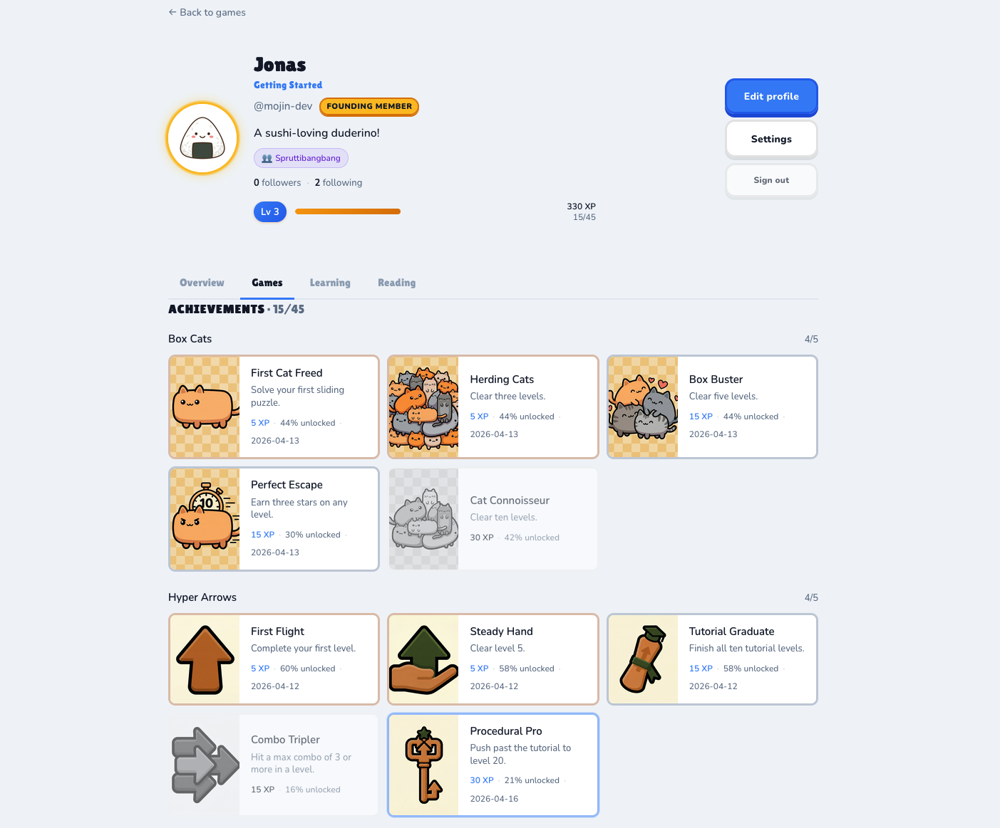

Deterministic multiplayer with rewind, running on phone.
Real-time multiplayer on a deterministic core. Same engine runs headless for testing and balance. Cross-platform out of the box; relay running live on Fly.
relay live · health 200 · Capacitor iOS · 51 replay seeds
High-craft casual and mid-core games, fast.
What the pipeline ships: a polished match-3, the kind a King-trained designer makes, built on purpose-built tools — a level generator, a deterministic solver, UI composition, VFX and SFX — now run by the AI harness. The automate-the-grind instinct from King, rebuilt. These tools stay in-house; players never touch them. They remix the polished games these tools produce.
A level generator that playtests itself.
Not just a solver, a real generator: it batches up to 1,000 rule-aware levels, each auto-playtested 50 times by a deterministic solver, in under 15 seconds — 100 in under 2 — unsolvable ones rejected, all sorted by difficulty, no human playtester. SFX, VFX and UI composition live in the same editor. Bento today; generalizing it across genres is the build. Players never touch this; they get the crafted games it makes.
1,000 levels auto-playtested in under 15s · 50 sims each · BentoSame deterministic core. Three.js + Rapier.
Renderer- and physics-agnostic by design. The engine runs fully headless, ships in 2D through pixi.js, and in 3D through Three.js with Rapier physics. One core, three surfaces.
Describe it. The game changes. In real time.
A working AI director shapes a live game as you talk to it: spawn things, change worlds, behaviors, camera, audio. It calls a fixed set of constrained tools. It never rewrites code and never touches files. Every session is deterministic and replays bit-identical. It is a game director, not a code writer, and it is the kernel the remix platform is built on.
~80 constrained tools · no code-gen · deterministic replayPlayers remix games into their own.
Everything above is real and running: quality games, the deterministic engine, the AI director. The platform on top: a player takes any game we ship, describes a feeling, the director restyles it and adds characters and worlds, and they publish and share it with a community. The Roblox pattern, AI-native, with a creator economy on top. That player loop is what we build next; the one blocker is builder reliability, and we designed this from day one.
substrate + director real · the player loop is the build
Play earns. Earning unlocks. Unlocks remix.
The portal already runs the real half: players earn achievements and tiered XP, unlock content per account, and play is instrumented with product analytics. Data-driven building is real too — the level generator tunes a thousand levels on simulated-play data. Closing the loop so analytics also drive content, the tools, and the economy — plus the store, the game-pass, and unlocks as remix currency — is the part we build.
live achievements + tiered XP + per-user unlocks UI · analytics instrumented · store/game-pass + data-loop the buildVoice in. Merged code out. A studio of agents.
Capture by voice or text. The harness routes to the right repo, spawns a worker in an isolated git worktree, runs QA, gates on trust tier, auto-merges or opens a PR. Overnight research agents and a librarian keep the knowledge base fresh. Running daily since the start of the year. Built solo.
daily since January · worker fleet + auto-merge + auto-revertA live world where AI agents possess players.
A multiplayer world on SpacetimeDB with an HTTP bridge that lets AI agents take over player characters and act in real time. Live. The concept is the point — visuals are deliberately spare.
live · SpacetimeDB module deployed
Verified, today
- Tiny Swords relay: live, health 200
- Urban Dead bridge: live, health ok
- Headless solver: 1,000+ plays / level / ~305ms, three AI strategies, no Math.random leakage
- Level generator: 1,000 levels auto-playtested in under 15s, 100 in under 2s (50 sims each, Bento)
- 3D engine: Three.js + Rapier, deterministic core
- Build harness: running daily since January; worktree-isolated worker fleet, QA gates, trust-tiered auto-merge
- Progression backend: achievements, tiered XP, per-user unlocks, live on the portal
- Analytics: PostHog product analytics + Sentry, consent-gated